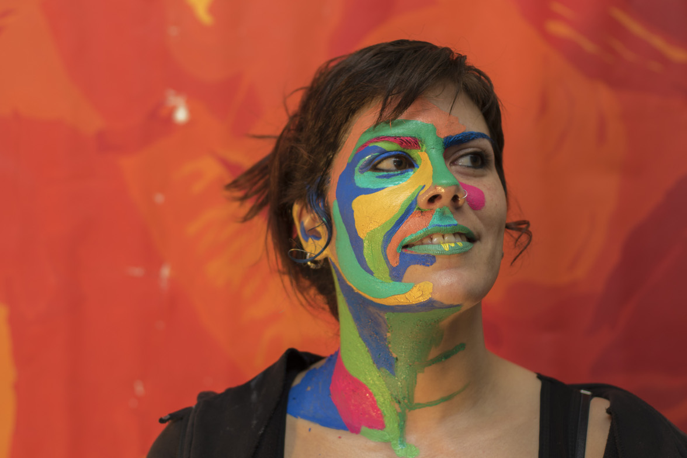

Elva was born in Galicia (Spain) in 1983. Studied Fine Arts and Philosophy. Moved to Granada (Spain) she had studied Islamic Ornamental Art and open her artistic world into geometry. Alhambra and Andalusian light has been a great inspiration for her. Hers is a life dedicated to art, experimenting new techniques and methods of expression.
